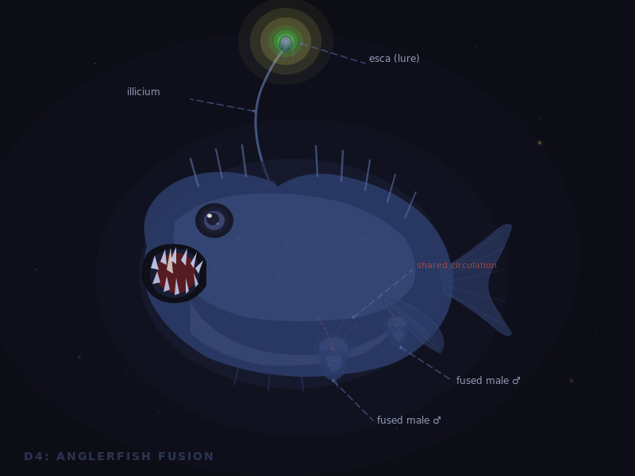
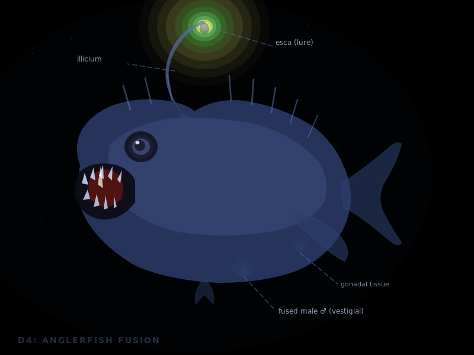

Claude generates an SVG illustration. Gemini Vision analyzes it against the story and gives a structured critique. Claude regenerates with that feedback. Same story, same style rules, two rounds.
Ceratioid deep-sea anglerfish sexual parasitism. The tiny male bites the female, enzymes dissolve both skins, their circulatory systems merge permanently. The male loses his eyes, fins, digestive system, and brain — retaining only his testes. A single female can carry up to 8 fused males simultaneously. These fish have lost adaptive immunity entirely to allow permanent tissue fusion without rejection.

